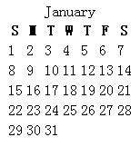

| 作者: | limodou |
|---|---|
| 联系: | limodou@gmail.com |
| 版本: | 0.1 |
| 主页: | http://wiki.woodpecker.org.cn/moin/NewEdit |
| BLOG: | http://www.donews.net/limodou |
| 版权: | FDL |
Django 中的模板系统可以被自由扩展，如自定义 filter, 自定义 Tag 等。其中 filter 用于对变量的处理。而 Tag 则功能强大，几乎可以做任何事情。我认为 Tag 的好处有非常多，比如：
如果要自定义 Tag ，那么要了解 Tag 的处理过程。在 Django 中， Tag 的处理分为两步。
因此自定义一个 Tag ，你需要针对这两步处理来做工作。
在 The Django template language: For Python programmers 文档中讲解了一些例子。大家可以看一下。
那么下面，我将实现一个显示日历的自定义 Tag 。
不想全部自已做，因此找了一个现成的模块。去 HTMLCalender 的主页下载这个模块。
然后解压到一个目录下，执行安装:
python setup.py install
然后解压到一个目录下，执行安装:
python setup.py install
因为上面的 HTMLCalender 需要它才可以运行。去 HTMLTemplate 主页下载这个模块。
manage.py startapp my_calendar
Note
这里起名为 my_calendar 。因为如果起名为 calendar 会与系统的 calendar 模块重名。
cd my_calendar md templatetags
Note
在 Windows 下是 md, 在 Linux 下是 mkdir 。
from django import template
register = template.Library()
class CalendarNode(template.Node):
def __init__(self):
pass
def render(self, context):
return "Calendar"
def do_calendar(parser, token):
return CalendarNode()
register.tag('calendar', do_calendar)
上面的代码只是一个空架子。不过让我们仔细地解释一下：
register 与自定义 filter 一样，它将用来注册一个 Tag 的名字到系统中去。
CalendarNode 它是 template.Node 的一个子类。每个 Tag 都需要从 Node 派生。这个类可以只有 render() 方法，用来返回处理后的文本。 __init__() 可能是有用的，先预留。
render() 方法接受一个 context 参数。这个参数就是在执行模板的渲染时由 View 传入的。不过更复杂的例子是你可以修改 context ，这样达到注入新变量的目的。不过本例没有演示。
do_calendar() 是一个由模板处理引擎在发现一个 Tag 的名字之后，将进行调用的方法。那么我们的 Tag 可能在模板中写为 {% calendar %} 。这个方法将在下面通过注册过程与一个名字相对应，这里我们想使用 calendar 。
它接受两个参数：
它将返回一个 Node 的实例，在本例中就是 CalendarNode 实例。
register.tag('calendar', do_calendar) 用来注册 Tag 名字和对应的处理方法。
尽管我们没有对 calendar 所带的参数进行处理，但它仍然可以显示。要知道我们还没有使用 HTMLCalender 模块呢。
{% load my_calendar %}
{% calendar 2006 1 %}
增加下面的 url 配置:
(r'^calendar/$', 'django.views.generic.simple.direct_to_template',
{'template': 'my_calendar/calendar'}),
INSTALLED_APPS = (
'django.contrib.auth',
'django.contrib.contenttypes',
'django.contrib.sessions',
'django.contrib.sites',
'newtest.wiki',
'newtest.address',
'newtest.ajax',
'newtest.my_calendar',
'django.contrib.admin',
)
增加了 my_calendar 应用。
页面上应该显示出 Calendar 的文本。我们在模板中定义的参数没有被用到。因为我们没有真正调用 HTMLCalender 输出，因此上面只是说明框架是可用的。
下面让我们加入参数的处理。
from django import template
import HTMLCalendar
register = template.Library()
class CalendarNode(template.Node):
def __init__(self, year, mon):
self.year = int(year)
self.mon = int(mon)
def render(self, context):
return HTMLCalendar.MonthCal().render(self.year, self.mon)
def do_calendar(parser, token):
try:
tag_name, arg = token.contents.split(None, 1)
except ValueError:
#if no args then using current date
import datetime
today = datetime.date.today()
year, mon = today.year, today.mon
else:
try:
year, mon = arg.split(None, 1)
except ValueError:
raise template.TemplateSyntaxError, "%r tag requires year and mon arguments" % tag_name
return CalendarNode(year, mon)
register.tag('calendar', do_calendar)
主要改动如下：
Note
不过在调试的过程中，的确有一些错误。象开始时我命名为 calendar 目录，结果造成与系统的 calendar 模块重名。然后不得已进行了改名。为什么发现要导入 HTMLTemplate 呢？因为在处理时 HTMLCalender 抛出了异常。但成功后我已经把这些调试语句去掉了。而且发现这些错误 Django 报告得有些简单，你可能不清楚倒底是什么错。因此最好的方法：一是在命令行下导入试一下，看一看有没有导入的错误。另外就是使用 try..except 然后使用 traceback 模块打印异常信息。
你会看到：
也许感到不好看，没关系，可以通过 CSS 进行美化。当然，这样可能还是不让人满意，比如：不是 i18n 方式的，因此看不到中文。不过这已经不是我们的重点了。掌握了自定义 Tag 的方法就可以自行进行改造了。
同时 HTMLCalender 模块本身可以传入一些链接，这样就可以在日历上点击了。这里不再试验了。有兴趣的可以自已做一下。